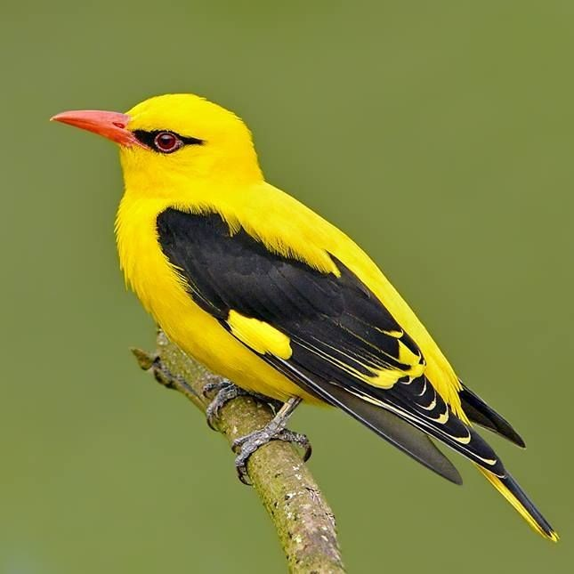
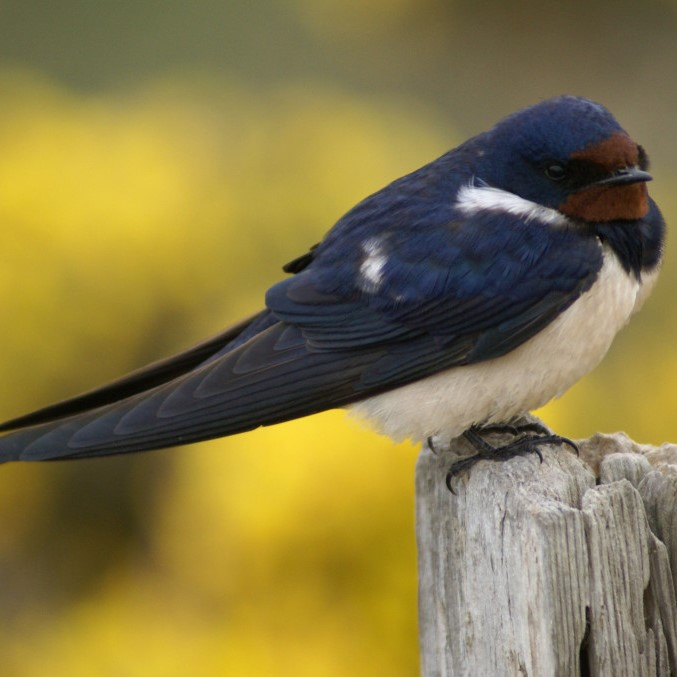
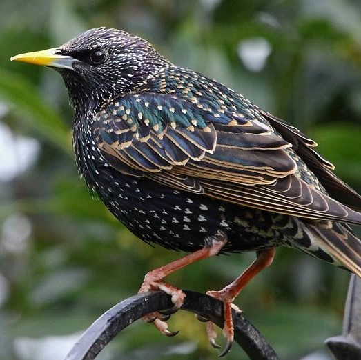
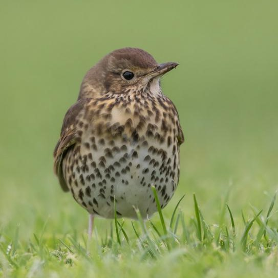

Gil (Pyrrhula pyrrhula) to ptak z rodziny łuszczyków, niewiele większy od wróbla domowego.
Samiec i samica są podobnej wielkości. Głowa z wierzchu, skrzydła i ogon są czarne, jasna pręga
na skrzydle, kuper i część brzucha białe, szyja z przodu, pierś są czerwone u samca, beżowe u
samicy. Dziób jest krótki i masywny. Młode osobniki nie mają czarnej czapeczki na głowie. Gile tworzą
niewielkie stada. Jest ptakiem częściowo wędrownym. W Polsce nieliczny ptak lęgowy we wszystkich
regionach, lokalnie może być średnio liczny. Zamieszkuje północną Europę i Azję aż po Kamczatkę i Japonię.
Posłuchaj jak śpiewa:
2. Wilga

Opis
Wilga to gatunek średniej wielkości ptaka wędrownego z rodziny wilgowatych, jedyny z tej
rodziny rozmnażający się w północnej strefie umiarkowanej. Nie jest zagrożony wyginięciem.
Intensywność koloru zależy przede wszystkim od płci oraz wieku. Samiec ma upierzenie koloru jaskrawożółtego,
przy oczach posiada czarny pasek, czarne są także jego skrzydła, na których widoczne są żółte plamki.
Samica nie ma czarnego paska przy oczach, jej podbródek jest biały, a na spodzie ciała zaznaczają
się ciemne kreski,dziób dorosłej samicy wilgi ma kolor ciemno różowy.
Posłuchaj jak śpiewa:
3. Jaskółka

Opis
Jaskółka zamieszkuje tereny wiejskie (rzadziej miasta) w sąsiedztwie terenów
otwartych, takich jak: łąki, pastwiska, pola, ugory, rzeki, stawy i jeziora. Żywi się głównie owadami
chwytanymi w locie; stąd większość czasu spędza w powietrzu. Ptak ten jest smukły, niewielki, niebiesko-czarny
o ceglastoczerwonym czole i podgardlu (pod którym metalicznie ciemnoniebieski pasek) oraz kremowobiałym
spodzie ciała. Ma mocno wcięty ogon.
Posłuchaj jak śpiewa:
4. Szpak

Opis
Szpak zwyczajny (Sturnus vulgaris) jest pospolitym ptakiem rozmiarami zbliżonymi do kosa.
Osiąga 20 cm długości ciała i do 40 cm rozpiętości skrzydeł. Ubarwienie szpaków jest bardzo
charakterystyczne i nie do pomylenia z żadnym innym gatunkiem. Jego pióra są czarne, lecz
połyskują intensywnie odcieniami zieleni i fioletu, a dodatkowo posiadają jasne kropkowanie.
Szpak zwyczajny pierwotnie zamieszkiwał lasy, lecz w odpowiedzi na postępującą urbanizację
przystosował się do życia w pobliżu człowieka.
Posłuchaj jak śpiewa:
5. Śpiewak

Opis
Drozd śpiewak występuje przede wszystkim w lasach, parkach, miejscach, które charakteryzują
się dość bogatym poszyciem. Gniazdo zakłada głównie w krzakach i na drzewach. Kształt gniazda
jest wielką ciekawostką – gniazdo przypomina filiżankę i w celu ochrony przed zimnem oraz
wzmocnienia, jest podklejone błotem. same. Brązowy grzbiet kontrastuje z kremowo-żółtym
brzuchem, na którym można wyróżnić szereg cętek. Biały dół brzucha, różowe stopy i nogi, oraz żółtawy dziób.